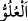
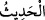
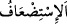
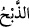
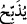
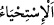

4. Firavun, (Mısır) toprağında gerçekten azmış, halkını çeşitli zümrelere
bölmüştü. Onlardan bir zümreyi güçsüz buluyor, bunların oğullarını boğazlıyor,
kızlarını ise sağ bırakıyordu. Çünkü o bozgunculardandı.
“Firavun, (Mısır) toprağında gerçekten azmış” cümlesi, başlangıç (isti’nâf)
cümlesidir ve yukarıdaki “haberinden bir kısmını” ifâdesini açıklar. Başına te’kid harfi
olan “ ” in gelişi, gelecekte anlatılacak şeylerin hakikat olduğunu ve önemini
vurgulamak içindir. “
” yükseklik demektir. Yâni Firavun, Mısır diyarında
büyüklenip azdı; başkaldırıp isyan etti; zulüm ve düşmanlıkta alışılmış olan sınırı aştı
demektir. Keşfü’l-esrâr’da ise ölçüsünden çıktı, haddini aştı anlamına geldiği
kaydedilmiştir.
Cüneyd (k.s.): “Firavun, sâhibi olmadığı bir şeyi (ilahlığı) iddiâ etmiştir” der.
“Halkını” Kıptîler ve Sıbtîler olmak üzere “çeşitli zümrelere bölmüştü.”
“
(zümreler)” kelimesi “
” kelimesinin çoğuludur. İnsanın güç ve kuvvet aldığı,
ortaya çıkıp tanındığı ve yayıldığı topluluğu anlamına gelir. Zira “
” kelimesi,
yayılmak ve dağılmak mânâlarına gelir. “
” haber yaygınlaşıp güçlendi; “
” kavim yayılıp çoğaldı, demektir.
Buna göre mânâ şu şekilde olur: Firavun, korkusundan dolayı halkını çeşitli gruplara
bölüp istediği kötülük ve zulmü işliyordu. Yahud da köle ve hizmetçi olarak onları
çalıştırmak üzere gruplara ayırıyordu. Her bir grubu inşaat, toprak sürme ve hendek
kazma gibi ağır işlerde istihdam ediyor, çalışmayanlardan ise vergi alıyordu. Keşfü’l-
esrâr’da kaydedildiğine göre Kıptîler, bu gruplardan biri olup itibar sâhibiydiler.
“Onlardan bir zümreyi güçsüz buluyor,”
Bu cümle, “
” fiilinin fâilinden hâldir. Yahud da başlangıç (isti’nâf) cümlesidir.
Sanki şöyle denildi: “Firavun, onları nasıl gruplara böldü?” Bunun üzerine ayette
buyruldu ki: “Mısırlılardan bir grubu eziyordu.” Bu ezilen grup, İsrâiloğullarıdır.
“
(güçsüz bulmak)” ifâdesi, zayıf ve zavallı bulmak veya saymak; diğer bir
ifâdeyle zavallılaştırmak ve kahredilmiş kılmak demektir. Yâni onların, kendilerine
yapılan bu zulmü def etmekten âciz olduklarını ifâde eder.
“Bunların oğullarını boğazlıyor, kızlarını ise sağ bırakıyordu.”
Bu cümle, bir önceki cümleden bedeldir. “
(boğazlamak)” kelimesinin aslı;
hayvanın boğazını ikiye ayırmak demektir. “
(boğazlıyor)” fiilindeki şedde (tef’îl
babından gelişi), teksir içindir, yâni Firavun’un bu işi çokça yaptığını gösterir. “
”
ise yaşatmak ve sağ bırakmak anlamına gelir.